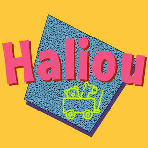

Trade Mark Journal No.2025/018 2 May 2025
UK00004188293 13 April 2025 (20,28,35)

- Class 20
- Action figures (Decorative -) of wax; Action figures (Decorative -) of plastic; Action figures (Decorative -) of plaster; Action figures (Decorative -) of wood; Model figures [ornaments] made of plastic; Model figures [ornaments] made of plaster; Model figures [ornaments] made of wood; Model figures [ornaments] made of wax.
- Class 28
- Toy dolls; Toy playsets; Toy figurines; Toy robots; Toy furniture; Toys; Toy cars; Toy putty; Toy balls; Toy balloons; Toy airplanes; Toy glockenspiels; Toy bakeware and toy cookware; Toy xylophones; Toy pistols; Pistols (Toy -); Toy vehicle playsets; Toy aeroplanes; Toy guns; Toy harmonicas; Toy pianos; Toy figures; Toy scooters; Toy rockets; Toy gliders; Toy prams; Toy fireworks; Toy weapons; Toy vehicles; Toy bakeware; Toy jewellery; Toy tableware; Toy animals; Radio-controlled toy robots; Toy models; Toy trains; Toy strollers; Toy trucks; Toy action figurines; Toy figure playsets; Toy mobiles; Ride-on toys; Toy dogs; Toy automobiles; Toy guitars; Toy food; Radio-controlled toys; Ride-on toy vehicles; Toy watches; Toy boats; Toy pinwheels; Wind-up toys; Toy swords; Toy binoculars; Toy cookware; Toy bicycles; Toy holsters; Toy armor; Toy whistles; Toy brooches; Toy aircraft; Toy sets; Radio-controlled toy vehicles; Vehicles (Radio-controlled toy -); Toy horns; Toy microscopes; Toy fish; Toy pushchairs; Toy dough; Toy hats; Toy castles; Toy telescopes; Toy cameras; Toy wheelbarrows; Radio-controlled toy airplanes; Toy wagons; Toy lorries; Toy tools; Radio-controlled toy aeroplanes; Toy birds; Remote-controlled toy vehicles; Clothing for toy figures; Toy fingernails; Toy telephones; Toy projectors; Toy periscopes; Toy microphones; Toy model cars; Toy plants; Plush toys; Toy houses; Miniature car models [toys or playthings]; Radio-controlled toy helicopters; Inflatable ride-on toys; Toy blocks; Toy miniature model boats; Modeled plastic toy figurines; Toy windmills; Toy trumpets; Remote-controlled toy planes; Model toys; Stuffed toy animals; Collectable toy figures; Masks (Toy -); Toy masks; Toy flowers; Cuddly toys; Pet toys; Toy arrows; Toy model vehicles; Fidget toys; Battery-operated action toys; Windup toys; Toy musical boxes; Plastic toys; Stuffed toys; Children's ride-on toy vehicles; Inflatable toys; Toy model kits; Model cars [toys or playthings]; Toy banks; Dog toys; Toy garages; Play mats for use with toy vehicles [playthings]; Toy music boxes; Bendable toys; Toy tents; Toy sewing sets; Toy pedal cars; Rockets being toy models; Toy foam hands; Positionable toy figures; Wooden toys; Toy sling planes; Toy car tracks; Toy racing sets; Toy nuchukus; Toy action figures; Toy model kit cars; Toy trick noisemakers; Toy tool sets; Toy knitting machines; Toy cap pistols; Toy imitation cosmetics; Action figure toys; Action figures; Cases for action figures; Playsets for action figures; Play sets for action figures; Toy environments for use with action figures; Action toys; Skill and action games; Action skill games; Lever action toys; Electric action figures with lights and sounds; Action figures [toys or playthings]; Play figures; Mechanical action toys; Scale model figures; Electronic action toys; Electric action toys; Toy figures capable of transforming into various shapes; Model craft kits of toy figures; Infants' action crib toys; Question sets for board games; Magnetic levitation toy figures; Toy cameras [not capable of taking a photograph]; Toy model train sets; Iron shots specifically for use in the shot put; Video game machine cases; Shot puts for field sports; Climbing frames (play things); Protective cases for video game device remote controls; War games using model soldiers; Model train sets; Role play games; Protective films for video game device remote controls; Stress relief balls for hand exercise; Bubble making wand and solution sets.
- Class 35
- Retail services in relation to toys; Online retail services relating to toys; Online marketing.
Haliou Ltd